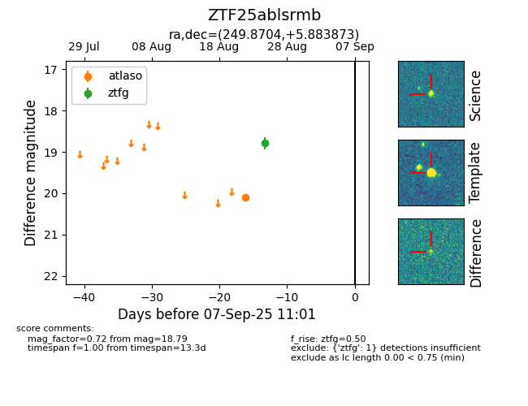

FINK: ZTF25ablsrmb
Lasair: ZTF25ablsrmb
ALeRCE: ZTF25ablsrmb
ZTF25ablsrmb (ztf,fink)
equatorial (ra, dec) = (249.8704,+5.88387)
galactic (l, b) = (22.3594,+31.92248)

last atlaso=20.11, ztfg=18.79
1 atlaso, 1 ztfg detections